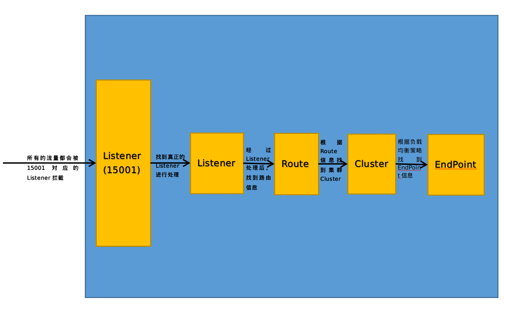

Pilot源码阅读--xDS解析
首先看下官网对于Pilot的介绍：
Pilot 为 Envoy sidecar 提供服务发现、用于智能路由的流量管理功能（例如，A/B 测试、金丝雀发布等）以及弹性功能（超时、重试、熔断器等）。
Pilot 将控制流量行为的高级路由规则转换为特定于环境的配置，并在运行时将它们传播到 sidecar。Pilot 将特定于平台的服务发现机制抽象出来，并将它们合成为任何符合 Envoy API 的 sidecar 都可以使用的标准格式。
下图展示了平台适配器和 Envoy 代理如何交互。

Service discovery
- 平台启动一个服务的新实例，该实例通知其平台适配器。
- 平台适配器使用 Pilot 抽象模型注册实例。
- Pilot 将流量规则和配置派发给 Envoy 代理，来传达此次更改。
这种松耦合允许 Istio 在 Kubernetes、Consul 或 Nomad 等多种环境中运行，同时维护相同的 operator 接口来进行流量管理。
您可以使用 Istio 的流量管理 API 来指示 Pilot 优化 Envoy 配置，以便对服务网格中的流量进行更细粒度地控制。
xDS介绍
上面介绍说了，Pilot为Envoy Sidecar提供服务发现、用于智能路由的流量管理功能（例如，A/B 测试、金丝雀发布等）以及弹性功能（超时、重试、熔断器等）。那么Pilot怎么为Envoy提供这些功能呢？其实理解起来跟简单，服务发现、流量管理等功能是有Envoy Sidecar去实现，但其实现的前提是要有相关的配置，而Pilot服务下发这些配置，而这些配置统称为xDS，其是一类发现服务的统称，包括下面几类：
-
CDS：Cluster Discovery Service
Cluster发现服务，Pilot下发CDS，Envoy才能直到有多少服务（集群）
-
EDS：Endpoint Discovery Service、
Endpoint发现服务，Envoy只是有多少集群还不够，要让Envoy能够做类似负载均衡等功能，其还需要知道集群下有多少主机，而Pilot下发的EDS信息就包括这些信息。
-
SDS：Secret Discovery Service
Secret发现服务，用于动态下发证书。
-
RDS：Route Discovery Service
路由发现服务，用于后续的路由功能的。
-
LDS：Listener Discovery Service
Listener发现服务，这个可以说是最重要的配置，其指导整个流量处理的流程，一两句很难说清楚，最好研究下源码。
上面介绍的xDS中，Pilot下发的目前只有CDS、EDS、LDS、RDS，而SDS是有Citadel组件负责的。那么Pilot如何下发这些xDS呢？
GRPC
关于GRPC协议是什么这里不介绍，有需要的自己Google下。
EnvoyProxy的data-plane-api工程定义了一系列的proto文件，其中envoy/service/discovery/v2/ads.proto定义如下：
syntax = "proto3";
package envoy.service.discovery.v2;
import "envoy/api/v2/discovery.proto";
option java_package = "io.envoyproxy.envoy.service.discovery.v2";
option java_outer_classname = "AdsProto";
option java_multiple_files = true;
option java_generic_services = true;
// [#not-implemented-hide:] Discovery services for endpoints, clusters, routes,
// and listeners are retained in the package `envoy.api.v2` for backwards
// compatibility with existing management servers. New development in discovery
// services should proceed in the package `envoy.service.discovery.v2`.
// See https://github.com/lyft/envoy-api#apis for a description of the role of
// ADS and how it is intended to be used by a management server. ADS requests
// have the same structure as their singleton xDS counterparts, but can
// multiplex many resource types on a single stream. The type_url in the
// DiscoveryRequest/DiscoveryResponse provides sufficient information to recover
// the multiplexed singleton APIs at the Envoy instance and management server.
service AggregatedDiscoveryService {
// This is a gRPC-only API.
rpc StreamAggregatedResources(stream api.v2.DiscoveryRequest)
returns (stream api.v2.DiscoveryResponse) {
}
rpc DeltaAggregatedResources(stream api.v2.DeltaDiscoveryRequest)
returns (stream api.v2.DeltaDiscoveryResponse) {
}
}
// [#not-implemented-hide:] Not configuration. Workaround c++ protobuf issue with importing
// services: https://github.com/google/protobuf/issues/4221
message AdsDummy {
}
其定义了Envoy获取xDS的接口，其中有StreamAggregatedResources和DeltaAggregatedResources两个接口，所以Pilot也实现了这两个接口，用于Envoy获取xDS。
pilot源码
xDS接口实现
pilot工程中，pilot/pkg/proxy/envoy/v2/ads.go实现了上面说的接口，如下：
// StreamAggregatedResources implements the ADS interface.
func (s *DiscoveryServer) StreamAggregatedResources(stream ads.AggregatedDiscoveryService_StreamAggregatedResourcesServer) error {
peerInfo, ok := peer.FromContext(stream.Context())
peerAddr := "0.0.0.0"
if ok {
peerAddr = peerInfo.Addr.String()
}
t0 := time.Now()
// first call - lazy loading, in tests. This should not happen if readiness
// check works, since it assumes ClearCache is called (and as such PushContext
// is initialized)
// InitContext returns immediately if the context was already initialized.
err := s.globalPushContext().InitContext(s.Env)
if err != nil {
// Error accessing the data - log and close, maybe a different pilot replica
// has more luck
adsLog.Warnf("Error reading config %v", err)
return err
}
con := newXdsConnection(peerAddr, stream)
// Do not call: defer close(con.pushChannel) !
// the push channel will be garbage collected when the connection is no longer used.
// Closing the channel can cause subtle race conditions with push. According to the spec:
// "It's only necessary to close a channel when it is important to tell the receiving goroutines that all data
// have been sent."
// Reading from a stream is a blocking operation. Each connection needs to read
// discovery requests and wait for push commands on config change, so we add a
// go routine. If go grpc adds gochannel support for streams this will not be needed.
// This also detects close.
var receiveError error
reqChannel := make(chan *xdsapi.DiscoveryRequest, 1)
go receiveThread(con, reqChannel, &receiveError)
node := &core.Node{}
for {
// Block until either a request is received or a push is triggered.
select {
case discReq, ok := <-reqChannel:
if !ok {
// Remote side closed connection.
return receiveError
}
// This should be only set for the first request. Guard with ID check regardless.
if discReq.Node != nil && discReq.Node.Id != "" {
node = discReq.Node
err = s.initConnectionNode(discReq.Node, con)
if err != nil {
return err
}
}
switch discReq.TypeUrl {
case ClusterType:
......
case ListenerType:
......
case RouteType:
......
case EndpointType:
......
default:
adsLog.Warnf("ADS: Unknown watched resources %s", discReq.String())
}
con.mu.Lock()
if !con.added {
con.added = true
con.mu.Unlock()
s.addCon(con.ConID, con)
defer s.removeCon(con.ConID, con)
} else {
con.mu.Unlock()
}
case pushEv := <-con.pushChannel:
// It is called when config changes.
// This is not optimized yet - we should detect what changed based on event and only
// push resources that need to be pushed.
// TODO: possible race condition: if a config change happens while the envoy
// was getting the initial config, between LDS and RDS, the push will miss the
// monitored 'routes'. Same for CDS/EDS interval.
// It is very tricky to handle due to the protocol - but the periodic push recovers
// from it.
err := s.pushConnection(con, pushEv)
pushEv.done()
if err != nil {
return nil
}
}
}
}
DeltaAggregatedResources接口暂时并没有实现。
从上面的switch分支我们很明显的可以看出其对CDS、LDS、RDS、EDS的处理，当然具体的代码下面介绍，现在只是列出来大概的结构。
CDS
我们先看下ads.go对应CDS分支处理的代码：
if con.CDSWatch {
// Already received a cluster watch request, this is an ACK
if discReq.ErrorDetail != nil {
adsLog.Warnf("ADS:CDS: ACK ERROR %v %s (%s) %v", peerAddr, con.ConID, con.modelNode.ID, discReq.String())
errCode := codes.Code(discReq.ErrorDetail.Code)
incrementXDSRejects(cdsReject, node.Id, errCode.String())
} else if discReq.ResponseNonce != "" {
con.ClusterNonceAcked = discReq.ResponseNonce
}
adsLog.Debugf("ADS:CDS: ACK %s %s (%s) %s %s", peerAddr, con.ConID, con.modelNode.ID, discReq.VersionInfo, discReq.ResponseNonce)
continue
}
// CDS REQ is the first request an envoy makes. This shows up
// immediately after connect. It is followed by EDS REQ as
// soon as the CDS push is returned.
adsLog.Infof("ADS:CDS: REQ %v %s %v version:%s", peerAddr, con.ConID, time.Since(t0), discReq.VersionInfo)
con.CDSWatch = true
err := s.pushCds(con, s.globalPushContext(), versionInfo())
if err != nil {
return err
}
其中，s.pushCds会计算资源并将资源发给Envoy SideCar。CDS计算资源最终会走到pilot/pkg/networking/core/v1alpha3/cluster.go的BuildClusters方法，如下：
func (configgen *ConfigGeneratorImpl) BuildClusters(env *model.Environment, proxy *model.Proxy, push *model.PushContext) []*apiv2.Cluster {
clusters := make([]*apiv2.Cluster, 0)
instances := proxy.ServiceInstances
outboundClusters := configgen.buildOutboundClusters(env, proxy, push)
......
}
我们关注下buildOutboundClusters方法：
func (configgen *ConfigGeneratorImpl) buildOutboundClusters(env *model.Environment, proxy *model.Proxy, push *model.PushContext) []*apiv2.Cluster {
clusters := make([]*apiv2.Cluster, 0)
inputParams := &plugin.InputParams{
Env: env,
Push: push,
Node: proxy,
}
networkView := model.GetNetworkView(proxy)
for _, service := range push.Services(proxy) {
destRule := push.DestinationRule(proxy, service)
for _, port := range service.Ports {
if port.Protocol == protocol.UDP {
continue
}
inputParams.Service = service
inputParams.Port = port
lbEndpoints := buildLocalityLbEndpoints(env, networkView, service, port.Port, nil)
// create default cluster
discoveryType := convertResolution(service.Resolution)
clusterName := model.BuildSubsetKey(model.TrafficDirectionOutbound, "", service.Hostname, port.Port)
serviceAccounts := push.ServiceAccounts[service.Hostname][port.Port]
defaultCluster := buildDefaultCluster(env, clusterName, discoveryType, lbEndpoints, model.TrafficDirectionOutbound, proxy, port)
setUpstreamProtocol(defaultCluster, port)
clusters = append(clusters, defaultCluster)
if destRule != nil {
// 组装Cluster，具体细节自己看代码
......
}
updateEds(defaultCluster)
// call plugins for the default cluster
for _, p := range configgen.Plugins {
p.OnOutboundCluster(inputParams, defaultCluster)
}
}
}
return clusters
}
我们先简单分析下上面的逻辑：
（1）获取所有的Service（这个就是k8s上的Service）
（2）获取DestinationRule，然后根据Service和DestinationRule组装Cluster
具体逻辑建议看下源码，从上面的简单分析来看CDS资源其实就是Service和DestinationRule资源两者的组装，不过我想大家肯定有个疑问，Service和DestinationRule怎么获取？这个先不急，后面会详细分析这块的。
所以CDS怎么获取到这里就很清晰了。
EDS
先看下ads.go对于EDS分支的处理：
if discReq.ErrorDetail != nil {
adsLog.Warnf("ADS:EDS: ACK ERROR %v %s (%s) %v", peerAddr, con.ConID, con.modelNode.ID, discReq.String())
errCode := codes.Code(discReq.ErrorDetail.Code)
incrementXDSRejects(edsReject, node.Id, errCode.String())
continue
}
// Envoy Sidecar的请求中需要带上需要计算Endpoint资源的Cluster集群
clusters := discReq.GetResourceNames()
if clusters == nil && discReq.ResponseNonce != "" {
// There is no requirement that ACK includes clusters. The test doesn't.
con.mu.Lock()
con.EndpointNonceAcked = discReq.ResponseNonce
con.mu.Unlock()
continue
}
......
con.Clusters = clusters
adsLog.Debugf("ADS:EDS: REQ %s %s clusters:%d", peerAddr, con.ConID, len(con.Clusters))
err := s.pushEds(s.globalPushContext(), con, versionInfo(), nil)
if err != nil {
return err
}
同理，s.pushEds负责计算EndPoint资源以及推送数据给Envoy Sidecar.注意，请求Endpoint资源时，Sidecar必须带上对应的集群信息，这样Pilot才知道要计算哪些Cluster的Endpoint信息。
EndPoint资源的计算很简单，这里不做太多介绍，自己看下源码。
LDS
先看下ads.go对于LDS分支的处理：
if con.LDSWatch {
// Already received a cluster watch request, this is an ACK
if discReq.ErrorDetail != nil {
adsLog.Warnf("ADS:LDS: ACK ERROR %v %s (%s) %v", peerAddr, con.ConID, con.modelNode.ID, discReq.String())
errCode := codes.Code(discReq.ErrorDetail.Code)
incrementXDSRejects(ldsReject, node.Id, errCode.String())
} else if discReq.ResponseNonce != "" {
con.ListenerNonceAcked = discReq.ResponseNonce
}
adsLog.Debugf("ADS:LDS: ACK %s %s (%s) %s %s", peerAddr, con.ConID, con.modelNode.ID, discReq.VersionInfo, discReq.ResponseNonce)
continue
}
// too verbose - sent immediately after EDS response is received
adsLog.Debugf("ADS:LDS: REQ %s %v", con.ConID, peerAddr)
con.LDSWatch = true
err := s.pushLds(con, s.globalPushContext(), versionInfo())
if err != nil {
return err
}
同理，s.pushLds负责Listener资源的计算以及下发数据至Envoy Sidecar.具体计算Listener的代码如下：
// pilot/pkg/networking/core/v1alpha3/listener.go
func (configgen *ConfigGeneratorImpl) BuildListeners(env *model.Environment, node *model.Proxy,
push *model.PushContext) []*xdsapi.Listener {
builder := NewListenerBuilder(node)
switch node.Type {
case model.SidecarProxy:
builder = configgen.buildSidecarListeners(env, node, push, builder)
case model.Router:
builder = configgen.buildGatewayListeners(env, node, push, builder)
}
builder.patchListeners(push)
return builder.getListeners()
}
这里我们关注下SidecarProxy（Router这种方式是提供给Gateway使用的，注意，Istio中的Gateway也是带有Envoy sidecar的）。
// buildSidecarListeners produces a list of listeners for sidecar proxies
func (configgen *ConfigGeneratorImpl) buildSidecarListeners(
env *model.Environment,
node *model.Proxy,
push *model.PushContext,
builder *ListenerBuilder) *ListenerBuilder {
mesh := env.Mesh
if mesh.ProxyListenPort > 0 {
// Any build order change need a careful code review
builder.buildSidecarInboundListeners(configgen, env, node, push).
buildSidecarOutboundListeners(configgen, env, node, push).
buildManagementListeners(configgen, env, node, push).
buildVirtualOutboundListener(configgen, env, node, push).
buildVirtualInboundListener(configgen, env, node, push)
}
return builder
}
对于Inbound和OutBound的区别我想也不用解释太多，只是用来区分流量的方向，这种区别对于InboundListener和OutboundListener同样可用。不过要弄清楚这个概念，我们首先得清楚LDS的重要性。下面是我个人的理解：

Listener中定义了Sidecar接收到流量之后的流程（各种各样的Filter，包括EnvoyFilter），所以这里区分InboundListener和OutboundListener，这样InboundListener接收到流量之后，流量最终会转发到Pod内部的应用，而OutBoundListener接收到的流量其实是Pod内部的应用发出来的，最终流量会走出Pod。
至于InboundListener和OutBoundListener具体的配置选项一样，所以我们这边只看下OutboundListener。
func (configgen *ConfigGeneratorImpl) buildSidecarOutboundListeners(env *model.Environment, node *model.Proxy,
push *model.PushContext) []*xdsapi.Listener {
noneMode := node.GetInterceptionMode() == model.InterceptionNone
actualWildcard, actualLocalHostAddress := getActualWildcardAndLocalHost(node)
var tcpListeners, httpListeners []*xdsapi.Listener
// For conflict resolution
listenerMap := make(map[string]*outboundListenerEntry)
for _, egressListener := range node.SidecarScope.EgressListeners {
services := egressListener.Services()
// VirtualService信息
virtualServices := egressListener.VirtualServices()
// determine the bindToPort setting for listeners
bindToPort := false
if noneMode {
// dont care what the listener's capture mode setting is. The proxy does not use iptables
bindToPort = true
} else if egressListener.IstioListener != nil &&
// proxy uses iptables redirect or tproxy. IF mode is not set
// for older proxies, it defaults to iptables redirect. If the
// listener's capture mode specifies NONE, then the proxy wants
// this listener alone to be on a physical port. If the
// listener's capture mode is default, then its same as
// iptables i.e. bindToPort is false.
egressListener.IstioListener.CaptureMode == networking.CaptureMode_NONE {
bindToPort = true
}
// 省略细节
......
for _, service := range services {
listenerOpts := buildListenerOpts{
env: env,
proxy: node,
proxyInstances: node.ServiceInstances,
proxyLabels: node.WorkloadLabels,
bind: bind,
port: listenPort.Port,
bindToPort: bindToPort,
}
// The listener protocol is determined by the protocol of egress listener port.
pluginParams := &plugin.InputParams{
ListenerProtocol: plugin.ModelProtocolToListenerProtocol(node, listenPort.Protocol,
core.TrafficDirection_OUTBOUND),
DeprecatedListenerCategory: networking.EnvoyFilter_DeprecatedListenerMatch_SIDECAR_OUTBOUND,
Env: env,
Node: node,
Push: push,
Bind: bind,
Port: listenPort,
Service: service,
}
// 这里构建真正的listener
configgen.buildSidecarOutboundListenerForPortOrUDS(node, listenerOpts, pluginParams, listenerMap,
virtualServices, actualWildcard)
}
// 省略细节
......
}
// Now validate all the listeners. Collate the tcp listeners first and then the HTTP listeners
// TODO: This is going to be bad for caching as the order of listeners in tcpListeners or httpListeners is not
// guaranteed.
invalid := 0.0
for name, l := range listenerMap {
if err := l.listener.Validate(); err != nil {
log.Warnf("buildSidecarOutboundListeners: error validating listener %s (type %v): %v", name, l.servicePort.Protocol, err)
invalid++
invalidOutboundListeners.Record(invalid)
continue
}
if l.servicePort.Protocol.IsTCP() {
tcpListeners = append(tcpListeners, l.listener)
} else {
httpListeners = append(httpListeners, l.listener)
}
}
tcpListeners = append(tcpListeners, httpListeners...)
// 如果是http协议的话，这里构建http的相关信息
httpProxy := configgen.buildHTTPProxy(env, node, push, node.ServiceInstances)
if httpProxy != nil {
httpProxy.TrafficDirection = core.TrafficDirection_OUTBOUND
tcpListeners = append(tcpListeners, httpProxy)
}
return tcpListeners
}
上面的代码会根据Service和VirtualService去构建，同理Service和VirtualService信息怎么得到的我们后面会分析。
所以构建Listener的是configgen.buildSidecarOutboundListenerForPortOrUDS方法：
func (configgen *ConfigGeneratorImpl) buildSidecarOutboundListenerForPortOrUDS(node *model.Proxy, listenerOpts buildListenerOpts,
pluginParams *plugin.InputParams, listenerMap map[string]*outboundListenerEntry,
virtualServices []model.Config, actualWildcard string) {
if features.BlockHTTPonHTTPSPort.Get() {
if listenerOpts.port == CanonicalHTTPSPort && pluginParams.Port.Protocol == protocol.HTTP {
msg := fmt.Sprintf("listener conflict detected: service %v specifies an HTTP service on HTTPS only port %d.",
pluginParams.Service.Hostname, CanonicalHTTPSPort)
pluginParams.Push.Add(model.ProxyStatusConflictOutboundListenerHTTPoverHTTPS, string(pluginParams.Service.Hostname), node, msg)
return
}
}
var destinationCIDR string
var listenerMapKey string
var currentListenerEntry *outboundListenerEntry
var ret bool
var opts []*filterChainOpts
conflictType := NoConflict
switch pluginParams.ListenerProtocol {
case plugin.ListenerProtocolHTTP:
// 构建Http的
if ret, opts = configgen.buildSidecarOutboundHTTPListenerOptsForPortOrUDS(node, &listenerMapKey, ¤tListenerEntry,
&listenerOpts, pluginParams, listenerMap, actualWildcard); !ret {
return
}
......
case plugin.ListenerProtocolTCP:
// 构建tcp的
if ret, opts = configgen.buildSidecarOutboundTCPListenerOptsForPortOrUDS(node, &destinationCIDR, &listenerMapKey, ¤tListenerEntry,
&listenerOpts, pluginParams, listenerMap, virtualServices, actualWildcard); !ret {
return
}
......
case plugin.ListenerProtocolAuto:
// Add tcp filter chain, build TCP filter chain first.
if ret, opts = configgen.buildSidecarOutboundTCPListenerOptsForPortOrUDS(node, &destinationCIDR, &listenerMapKey, ¤tListenerEntry,
&listenerOpts, pluginParams, listenerMap, virtualServices, actualWildcard); !ret {
return
}
listenerOpts.filterChainOpts = append(listenerOpts.filterChainOpts, opts...)
// Add http filter chain and tcp filter chain to the listener opts
if ret, opts = configgen.buildSidecarOutboundHTTPListenerOptsForPortOrUDS(node, &listenerMapKey, ¤tListenerEntry,
&listenerOpts, pluginParams, listenerMap, actualWildcard); !ret {
return
}
// Add application protocol filter chain match to the http filter chain. The application protocol will be set by http inspector
for _, opt := range opts {
if opt.match == nil {
opt.match = &listener.FilterChainMatch{}
}
// Support HTTP/1.0, HTTP/1.1 and HTTP/2
opt.match.ApplicationProtocols = append(opt.match.ApplicationProtocols, applicationProtocols...)
}
listenerOpts.filterChainOpts = append(listenerOpts.filterChainOpts, opts...)
listenerOpts.needHTTPInspector = true
if currentListenerEntry != nil {
if currentListenerEntry.protocol.IsHTTP() {
conflictType = AutoOverHTTP
} else if currentListenerEntry.protocol.IsTCP() {
conflictType = AutoOverTCP
} else {
conflictType = AutoOverAuto
}
}
default:
// UDP or other protocols: no need to log, it's too noisy
return
}
// These wildcard listeners are intended for outbound traffic. However, there are cases where inbound traffic can hit these.
// This will happen when there is a no more specific inbound listener, either because Pilot hasn't sent it (race condition
// at startup), or because it never will (a port not specified in a service but captured by iptables).
// When this happens, Envoy will infinite loop sending requests to itself.
// To prevent this, we add a filter chain match that will match the pod ip and blackhole the traffic.
if listenerOpts.bind == actualWildcard && features.RestrictPodIPTrafficLoops.Get() {
blackhole := blackholeStructMarshalling
if util.IsXDSMarshalingToAnyEnabled(pluginParams.Node) {
blackhole = blackholeAnyMarshalling
}
listenerOpts.filterChainOpts = append([]*filterChainOpts{{
destinationCIDRs: pluginParams.Node.IPAddresses,
networkFilters: []*listener.Filter{&blackhole},
}}, listenerOpts.filterChainOpts...)
}
// Lets build the new listener with the filter chains. In the end, we will
// merge the filter chains with any existing listener on the same port/bind point
l := buildListener(listenerOpts)
appendListenerFallthroughRoute(l, &listenerOpts, pluginParams.Node, pluginParams.Env, currentListenerEntry)
l.TrafficDirection = core.TrafficDirection_OUTBOUND
mutable := &plugin.MutableObjects{
Listener: l,
FilterChains: getPluginFilterChain(listenerOpts),
}
for _, p := range configgen.Plugins {
if err := p.OnOutboundListener(pluginParams, mutable); err != nil {
log.Warn(err.Error())
}
}
// Filters are serialized one time into an opaque struct once we have the complete list.
// 这里会去真正构建完成的FilterChain
if err := buildCompleteFilterChain(pluginParams, mutable, listenerOpts); err != nil {
log.Warna("buildSidecarOutboundListeners: ", err.Error())
return
}
// If there is a TCP listener on well known port, cannot add any http filter chain
// with the inspector as it will break for server-first protocols. Similarly,
// if there was a HTTP listener on well known port, cannot add a tcp listener
// with the inspector as inspector breaks all server-first protocols.
if currentListenerEntry != nil &&
!isConflictWithWellKnownPort(pluginParams.Port.Protocol, currentListenerEntry.protocol, conflictType) {
log.Warnf("conflict happens on a well known port %d, incoming protocol %v, existing protocol %v, conflict type %v",
pluginParams.Port.Port, pluginParams.Port.Protocol, currentListenerEntry.protocol, conflictType)
return
}
......
}
上面的代理，简单的逻辑如果：
（1）根据协议（Http、Tcp或者Auto自适应）去构建对应的Listener，但这里构建出来的Listener的信息是不完整的
（2）第一步构建出来的Listener信息了，但是不完整的，buildCompleteFilterChain去构建完整的FilterChain
（注意，我们上面说了，Listener中定义了Sidecar接收到流量之后的流程（各种各样的Filter，包括EnvoyFilter），而FilterChian就是这个流程的配置信息，比如Listener接收流量后，流量用什么协议接收，接收之后，处理的过程中有很多Filter，包括EnvoyFilter的执行）
第（1）步构建简单的Listener其实很简单，我们说下第二部buildCompleteFilterChain，如下：
func buildCompleteFilterChain(pluginParams *plugin.InputParams, mutable *plugin.MutableObjects, opts buildListenerOpts) error {
if len(opts.filterChainOpts) == 0 {
return fmt.Errorf("must have more than 0 chains in listener: %#v", mutable.Listener)
}
httpConnectionManagers := make([]*http_conn.HttpConnectionManager, len(mutable.FilterChains))
for i := range mutable.FilterChains {
// 根据协议构建各种各样的Listener信息
chain := mutable.FilterChains[i]
opt := opts.filterChainOpts[i]
mutable.Listener.FilterChains[i].Metadata = opt.metadata
// we are building a network filter chain (no http connection manager) for this filter chain
// In HTTP, we need to have mixer, RBAC, etc. upfront so that they can enforce policies immediately
// For network filters such as mysql, mongo, etc., we need the filter codec upfront. Data from this
// codec is used by RBAC or mixer later.
if opt.httpOpts == nil {
if len(opt.networkFilters) > 0 {
// this is the terminating filter
lastNetworkFilter := opt.networkFilters[len(opt.networkFilters)-1]
for n := 0; n < len(opt.networkFilters)-1; n++ {
mutable.Listener.FilterChains[i].Filters = append(mutable.Listener.FilterChains[i].Filters, opt.networkFilters[n])
}
mutable.Listener.FilterChains[i].Filters = append(mutable.Listener.FilterChains[i].Filters, chain.TCP...)
mutable.Listener.FilterChains[i].Filters = append(mutable.Listener.FilterChains[i].Filters, lastNetworkFilter)
} else {
mutable.Listener.FilterChains[i].Filters = append(mutable.Listener.FilterChains[i].Filters, chain.TCP...)
}
log.Debugf("attached %d network filters to listener %q filter chain %d", len(chain.TCP)+len(opt.networkFilters), mutable.Listener.Name, i)
} else {
// Add the TCP filters first.. and then the HTTP connection manager
mutable.Listener.FilterChains[i].Filters = append(mutable.Listener.FilterChains[i].Filters, chain.TCP...)
opt.httpOpts.statPrefix = mutable.Listener.Name
httpConnectionManagers[i] = buildHTTPConnectionManager(pluginParams.Node, opts.env, opt.httpOpts, chain.HTTP)
filter := &listener.Filter{
Name: xdsutil.HTTPConnectionManager,
}
if util.IsXDSMarshalingToAnyEnabled(pluginParams.Node) {
filter.ConfigType = &listener.Filter_TypedConfig{TypedConfig: util.MessageToAny(httpConnectionManagers[i])}
} else {
filter.ConfigType = &listener.Filter_Config{Config: util.MessageToStruct(httpConnectionManagers[i])}
}
mutable.Listener.FilterChains[i].Filters = append(mutable.Listener.FilterChains[i].Filters, filter)
log.Debugf("attached HTTP filter with %d http_filter options to listener %q filter chain %d",
len(httpConnectionManagers[i].HttpFilters), mutable.Listener.Name, i)
}
}
if !opts.skipUserFilters {
// 插入EnvoyFilter，命名上看是Deprecated，随时会被抛弃。。。。
// NOTE: we have constructed the HTTP connection manager filter above and we are passing the whole filter chain
// EnvoyFilter crd could choose to replace the HTTP ConnectionManager that we built or can choose to add
// more filters to the HTTP filter chain. In the latter case, the deprecatedInsertUserFilters function will
// overwrite the HTTP connection manager in the filter chain after inserting the new filters
return envoyfilter.DeprecatedInsertUserFilters(pluginParams, mutable.Listener, httpConnectionManagers)
}
return nil
}
所以，从上面的代码简单可以看出来：
（1）根据协议添加对应协议的Filter
（2）插入EnvoyFilter（envoyfilter.DeprecatedInsertUserFilters）
所以看起来很清晰，对应的EnvoyFilter代码怎么插入可以自己看下代码，因为EnvoyFilter会根据Istio的版本发布而变动，所以每个版本的Pilot的EnvoyFilter代码处理那块都会有点不同。
至此，我们简单梳理了Listener的处理过程了。
RDS
先看下ads.go对于RDS分支的处理：
if discReq.ErrorDetail != nil {
adsLog.Warnf("ADS:RDS: ACK ERROR %v %s (%s) %v", peerAddr, con.ConID, con.modelNode.ID, discReq.String())
errCode := codes.Code(discReq.ErrorDetail.Code)
incrementXDSRejects(rdsReject, node.Id, errCode.String())
continue
}
// 需要申请的路由信息名称列表
routes := discReq.GetResourceNames()
......
if sortedRoutes == nil {
sort.Strings(routes)
sortedRoutes = routes
}
con.Routes = sortedRoutes
adsLog.Debugf("ADS:RDS: REQ %s %s routes:%d", peerAddr, con.ConID, len(con.Routes))
err := s.pushRoute(con, s.globalPushContext(), versionInfo())
if err != nil {
return err
}
（1）Envoy Sidecar申请RDS信息的时候需要告知Pilot其申请的路由信息是哪些，即路由信息名称列表
（2）s.pushRoute 会计算路由信息以及下发资源到Envoy Sidecar
具体计算路由信息的过程如下：
// BuildHTTPRoutes produces a list of routes for the proxy
func (configgen *ConfigGeneratorImpl) BuildHTTPRoutes(env *model.Environment, node *model.Proxy, push *model.PushContext,
routeNames []string) []*xdsapi.RouteConfiguration {
routeConfigurations := make([]*xdsapi.RouteConfiguration, 0)
switch node.Type {
case model.SidecarProxy:
vHostCache := make(map[int][]*route.VirtualHost)
for _, routeName := range routeNames {
// 计算一个完整的RouteConfiguration信息
rc := configgen.buildSidecarOutboundHTTPRouteConfig(env, node, push, routeName, vHostCache)
if rc != nil {
rc = envoyfilter.ApplyRouteConfigurationPatches(networking.EnvoyFilter_SIDECAR_OUTBOUND, node, push, rc)
} else {
rc = &xdsapi.RouteConfiguration{
Name: routeName,
VirtualHosts: []*route.VirtualHost{},
ValidateClusters: proto.BoolFalse,
}
}
routeConfigurations = append(routeConfigurations, rc)
}
case model.Router:
for _, routeName := range routeNames {
rc := configgen.buildGatewayHTTPRouteConfig(env, node, push, routeName)
if rc != nil {
rc = envoyfilter.ApplyRouteConfigurationPatches(networking.EnvoyFilter_GATEWAY, node, push, rc)
} else {
rc = &xdsapi.RouteConfiguration{
Name: routeName,
VirtualHosts: []*route.VirtualHost{},
ValidateClusters: proto.BoolFalse,
}
}
routeConfigurations = append(routeConfigurations, rc)
}
}
return routeConfigurations
}
这里声明下，再Istio中，只有http协议的才需要计算route信息，tcp的route信息已经跟随Listener下发了。
同理我们只关注SidecarProxy，其计算一个完整的Route信息方法：
func (configgen *ConfigGeneratorImpl) buildSidecarOutboundHTTPRouteConfig(env *model.Environment, node *model.Proxy, push *model.PushContext,
routeName string, vHostCache map[int][]*route.VirtualHost) *xdsapi.RouteConfiguration {
var virtualHosts []*route.VirtualHost
listenerPort := 0
useSniffing := false
var err error
if util.IsProtocolSniffingEnabledForOutbound(node) &&
!strings.HasPrefix(routeName, model.UnixAddressPrefix) {
index := strings.IndexRune(routeName, ':')
if index != -1 {
useSniffing = true
}
listenerPort, err = strconv.Atoi(routeName[index+1:])
} else {
listenerPort, err = strconv.Atoi(routeName)
}
if err != nil {
// we have a port whose name is http_proxy or unix:///foo/bar
// check for both.
if routeName != RDSHttpProxy && !strings.HasPrefix(routeName, model.UnixAddressPrefix) {
// TODO: This is potentially one place where envoyFilter ADD operation can be helpful if the
// user wants to ship a custom RDS. But at this point, the match semantics are murky. We have no
// object to match upon. This needs more thought. For now, we will continue to return nil for
// unknown routes
return nil
}
}
cacheHit := false
if useSniffing && listenerPort != 0 {
// Check if we have already computed the list of all virtual hosts for this port
// If so, then we simply have to return only the relevant virtual hosts for
// this listener's host:port
if vhosts, exists := vHostCache[listenerPort]; exists {
virtualHosts = getVirtualHostsForSniffedServicePort(vhosts, routeName)
cacheHit = true
}
}
if !cacheHit {
virtualHosts = configgen.buildSidecarOutboundVirtualHosts(env, node, push, routeName, listenerPort)
if listenerPort > 0 {
// only cache for tcp ports and not for uds
vHostCache[listenerPort] = virtualHosts
}
// FIXME: This will ignore virtual services with hostnames that do not match any service in the registry
// per api spec, these hostnames + routes should appear in the virtual hosts (think bookinfo.com and
// productpage.ns1.svc.cluster.local). See the TODO in buildSidecarOutboundVirtualHosts for the right solution
if useSniffing {
virtualHosts = getVirtualHostsForSniffedServicePort(virtualHosts, routeName)
}
}
util.SortVirtualHosts(virtualHosts)
if features.EnableFallthroughRoute.Get() && !useSniffing {
// This needs to be the last virtual host, as routes are evaluated in order.
if util.IsAllowAnyOutbound(node) {
virtualHosts = append(virtualHosts, &route.VirtualHost{
Name: util.PassthroughRouteName,
Domains: []string{"*"},
Routes: []*route.Route{
{
Match: &route.RouteMatch{
PathSpecifier: &route.RouteMatch_Prefix{Prefix: "/"},
},
Action: &route.Route_Route{
Route: &route.RouteAction{
ClusterSpecifier: &route.RouteAction_Cluster{Cluster: util.PassthroughCluster},
},
},
},
},
})
} else {
virtualHosts = append(virtualHosts, &route.VirtualHost{
Name: util.BlackHoleRouteName,
Domains: []string{"*"},
Routes: []*route.Route{
{
Match: &route.RouteMatch{
PathSpecifier: &route.RouteMatch_Prefix{Prefix: "/"},
},
Action: &route.Route_DirectResponse{
DirectResponse: &route.DirectResponseAction{
Status: 502,
},
},
},
},
})
}
}
out := &xdsapi.RouteConfiguration{
Name: routeName,
// 这个资源最重要
VirtualHosts: virtualHosts,
ValidateClusters: proto.BoolFalse,
}
pluginParams := &plugin.InputParams{
ListenerProtocol: plugin.ListenerProtocolHTTP,
ListenerCategory: networking.EnvoyFilter_SIDECAR_OUTBOUND,
Env: env,
Node: node,
Push: push,
Port: &model.Port{
Name: "",
Port: listenerPort,
Protocol: protocol.HTTP,
},
}
// call plugins
for _, p := range configgen.Plugins {
p.OnOutboundRouteConfiguration(pluginParams, out)
}
return out
}
从上面的代理中我们可以清晰的看出，对于一个RouteConfiguration，其都会携带VirtualHosts，这个对于后面的路由起到关键的作用。
简单说下VirtualHost为什么这么重要，我这边按照官方的Bookinfo为例子：
istioctl pc route productpage-v1-5ccf59b544-th6qw --name 9080 -o json
输出:
[
{
"name": "9080",
"virtualHosts": [
{
"name": "details.default.svc.cluster.local:9080",
"domains": [
"details.default.svc.cluster.local",
"details.default.svc.cluster.local:9080",
"details",
"details:9080",
"details.default.svc.cluster",
"details.default.svc.cluster:9080",
"details.default.svc",
"details.default.svc:9080",
"details.default",
"details.default:9080",
"10.109.2.81",
"10.109.2.81:9080"
],
"routes": [
{
"name": "default",
"match": {
"prefix": "/"
},
"route": {
"cluster": "outbound|9080||details.default.svc.cluster.local",
......
},
......
}
]
},
{
"name": "productpage.default.svc.cluster.local:9080",
"domains": [
"productpage.default.svc.cluster.local",
"productpage.default.svc.cluster.local:9080",
"productpage",
"productpage:9080",
"productpage.default.svc.cluster",
"productpage.default.svc.cluster:9080",
"productpage.default.svc",
"productpage.default.svc:9080",
"productpage.default",
"productpage.default:9080",
"10.98.20.239",
"10.98.20.239:9080"
],
"routes": [
{
"name": "default",
"match": {
"prefix": "/"
},
"route": {
"cluster": "outbound|9080||productpage.default.svc.cluster.local",
......
},
......
}
]
},
{
"name": "ratings.default.svc.cluster.local:9080",
"domains": [
"ratings.default.svc.cluster.local",
"ratings.default.svc.cluster.local:9080",
"ratings",
"ratings:9080",
"ratings.default.svc.cluster",
"ratings.default.svc.cluster:9080",
"ratings.default.svc",
"ratings.default.svc:9080",
"ratings.default",
"ratings.default:9080",
"10.102.197.207",
"10.102.197.207:9080"
],
"routes": [
{
"name": "default",
"match": {
"prefix": "/"
},
"route": {
"cluster": "outbound|9080||ratings.default.svc.cluster.local",
......
},
......
}
]
},
{
"name": "reviews.default.svc.cluster.local:9080",
"domains": [
"reviews.default.svc.cluster.local",
"reviews.default.svc.cluster.local:9080",
"reviews",
"reviews:9080",
"reviews.default.svc.cluster",
"reviews.default.svc.cluster:9080",
"reviews.default.svc",
"reviews.default.svc:9080",
"reviews.default",
"reviews.default:9080",
"10.98.43.194",
"10.98.43.194:9080"
],
"routes": [
{
"name": "default",
"match": {
"prefix": "/"
},
"route": {
"cluster": "outbound|9080||reviews.default.svc.cluster.local",
......
},
......
}
]
}
],
"validateClusters": false
}
]
先简单说明下，路由名称其实就是端口号，bookinfo对应的服务对应端口都是9080，所以其对应的route信息都会放到同一个9080中，而9080 RouteConfiguration区分不同服务就是通过VirtualHost，每个VirtualHost都带有name,domains和routes，其中domains就是域名信息列表，routes就是该服务真正的路由信息，其携带的route中会有cluster信息，这也就是为什么route能找到cluster的原因。
在k8s中，http服务访问都是通过域名访问，所以我们可以根据Listener中指定的路由名称9080找到RouteConfiguration，再根据RouteConfiguration中的VirtualHost列中的VirtualHost的domains列表进行域名匹配，匹配中了就能找到cluster集群名。
这样子，我们介绍完了xDS了。